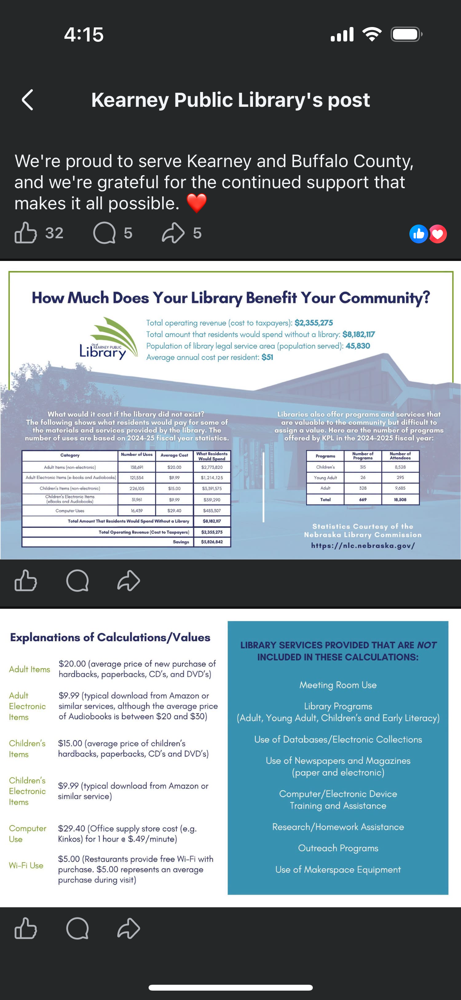

The post
Here's what actually ran — a warm thank-you caption, followed by a data graphic showing the library returns roughly $5.8M more in community value than it costs in taxpayer funding.

Why accurate data still fails
The organization's goal here is legitimate: justify continued funding with real numbers. But the numbers are built for a budget hearing, not a Facebook feed. A skeptical resident scrolling past doesn't see themselves anywhere in $2.3 million or $8.1 million — those are institutional totals, and nobody personally lives inside a seven-figure aggregate.
The one number in that whole graphic that actually has a human foothold — $51, the average annual cost per resident — is sitting in row four of a data table. It's the most persuasive line in the post, and it's the easiest one to scroll past.
The audience problem — who this post is actually talking to
Knowledge-based, not freshly sourced — verify before use.
This post is trying to reach two different audiences at once, and they don't share the same objection:
Patrons — parents at storytime, students, job-seekers using the computers, retirees, homeschoolers. They already know the value. This post isn't really for them.
Non-user taxpayers — the people this post actually needs to move, and the ones a Facebook algorithm hands it to by default. Their objection usually isn't "is $51 worth it." It's "I don't use it, so why should I care" or "isn't everything free online now anyway." That's an awareness gap, not a math problem. A lot of public resistance to library funding comes from people picturing a library the way it was 20 years ago — quiet, books-only — with no idea it now does things like notary services, tool lending, tax help, WiFi hotspot checkouts, job-search help, or 3D printing.
Dollar-math ROI only moves someone already primed to think about their taxes. It does nothing for someone who's never walked in and assumes the place doesn't apply to them. For that audience, a specific, surprising fact about a modern service does more work than any ROI figure — it's the kind of thing that gets a comment and a tag, not a nod.
Two rewrites, for two audiences
Option A — for someone already thinking about their taxes. Do the division: $8,182,117 in community value, divided across 45,830 residents, is about $178 in value per person. Against the $51 they paid. Same sourced data, reframed around one person instead of the whole budget.
This year, the average Kearney resident paid about $51 for a library card — and got back roughly $178 in books, programs, and computer time.
That's not a guess. And it doesn't even count meeting rooms, research help, or makerspace time, because those are hard to put a price tag on.
$51 in. $178 back. That's the math on your library card this year. ❤️📚
Option B — for someone who's never set foot inside. Leads with a specific, surprising service instead of a dollar figure, since the objection here is awareness, not price.
Did you know Kearney Public Library will notarize your documents for free? Or that you can check out a WiFi hotspot, get help filing your taxes, or 3D print something — all with a library card that costs the average resident about $51 a year.
Most people picture a library as just books. Here's what yours actually does.
Pick the job before picking the post
Same sourced data, two different jobs. Option A works if the post is riding a budget or levy conversation and needs to reassure people already asking "is this worth it." Option B works if the goal is reach and shares from people who don't currently think about the library at all. They're not interchangeable — the mistake is picking one post and hoping it does both jobs at once.